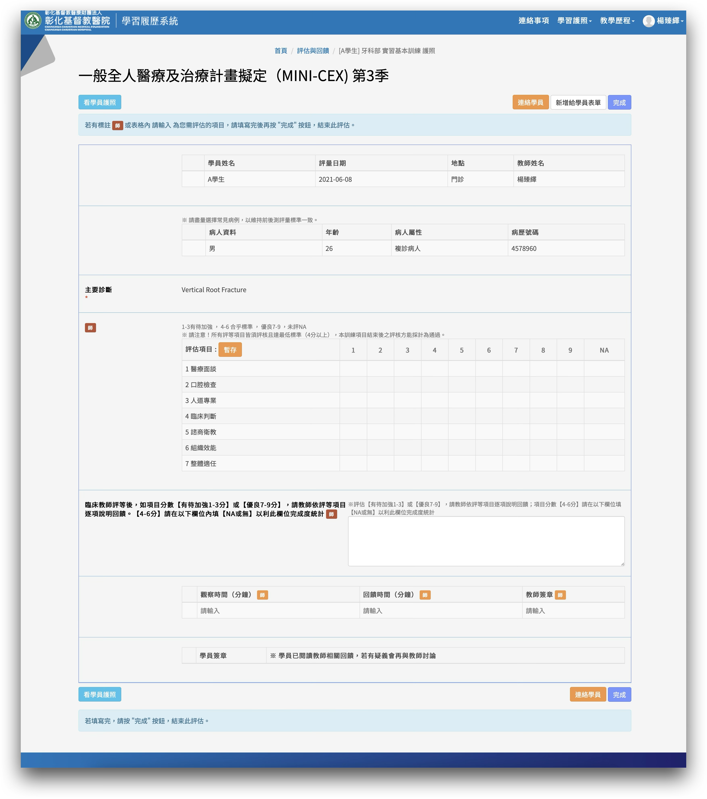
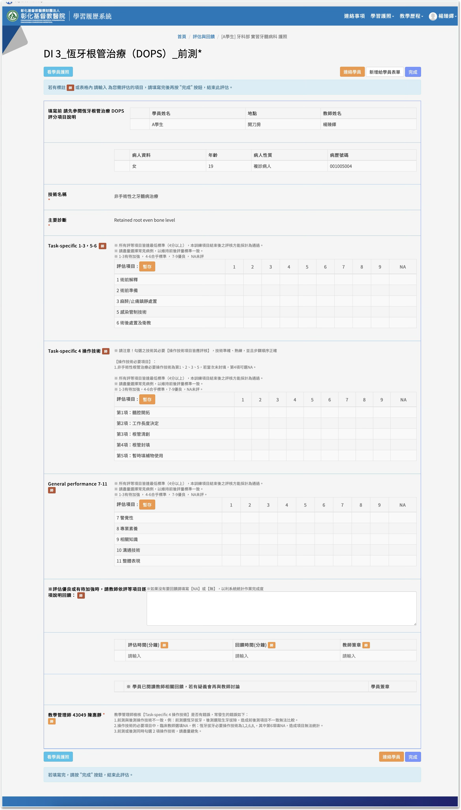
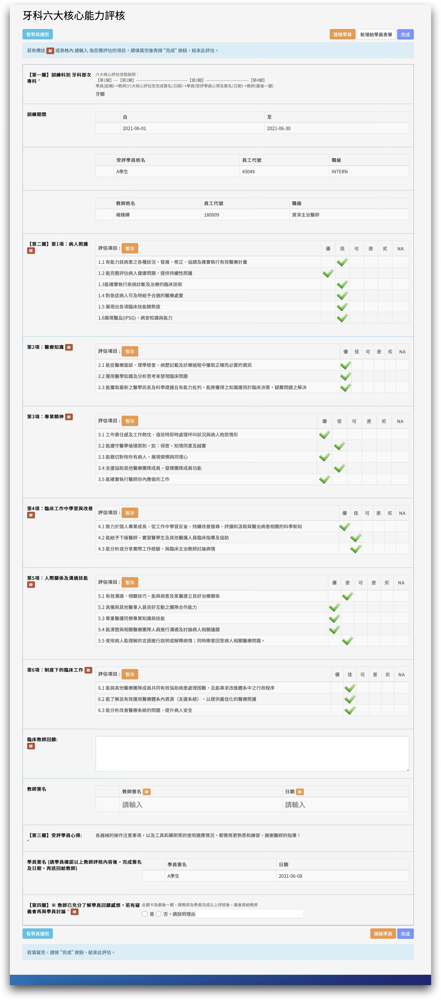
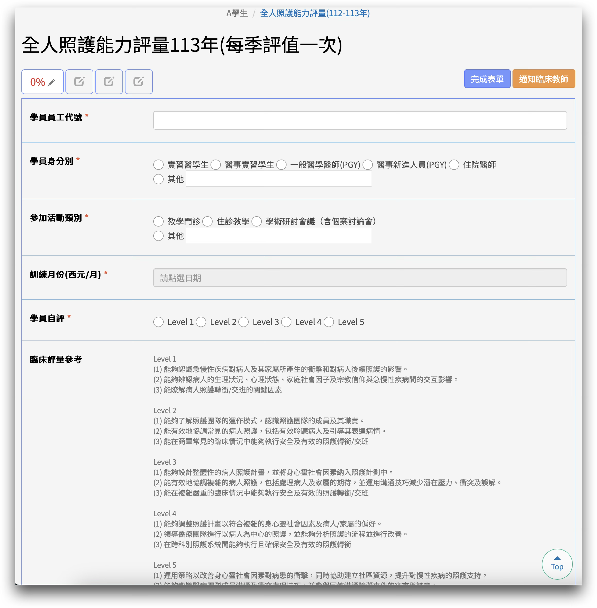

提到「評核」，你想到什麼？
手機掃 QR code 加入互動 → 輸入關鍵字
掃我加入互動
Intern 六大評核與教學機制
所有項目都會記錄在 e-portfolio，作為訓練結業的依據
mini-CEX
迷你臨床演練評量
每季一次
每季一次
DOPS
操作技術直接觀察
前測 / 後測
前測 / 後測
六大核心能力
ACGME 六大能力
每季一次
每季一次
全人照護評量
參與全人教學活動
每季一次
每季一次
病歷寫作教學
自寫病歷請師批改
持續進行
持續進行
門診教學
跟診初診或特殊案例
持續進行
持續進行
共通評分標準
mini-CEX 與 DOPS 皆採 9 項式評分
所有評分項目皆需達 4 分 以上才能通過 ─ 未通過可再擇期「重新」評核，沒有次數限制
mini-CEX 七大評量項目
醫療面談
口腔檢查
人道專業
臨床判斷
諮商衛教
組織效能
整體適任
護照內有完整評量指引，記得查閱 ─ 每項皆需 4 分以上通過
e-portfolio 實際畫面
mini-CEX 表單長這樣
表單重點
- 基本資料：學員、地點、教師
- 病人資料 + 主要診斷
- 七項評估 1–9 分
- 臨床教師逐項回饋
- 觀察 + 回饋時間
- 師生雙方簽章

↕ 滾動，或點左側重點跳轉
DOPS 七大技術類別
恆牙拔牙
恆牙根管治療
窩洞填補
牙周病治療
補綴贗復治療
兒童牙科學
口腔外科及急症
護照內有完整評分項目說明，記得查閱
e-portfolio 實際畫面
DOPS 表單長這樣（以恆牙根管治療為例）
表單重點
- 標明前測 / 後測
- 基本資料 + 主要診斷
- Task-specific 1-3、5-6（術前/感染/術後）
- Task-specific 4 操作技術（依術式勾選）
- General performance 7–11
- 教師回饋 + 雙方簽章
- 教學管理師備註提醒

↕ 滾動，或點左側重點跳轉
DOPS 前後測時程
PRE-TEST
前測
進站後
兩周內 完成
兩周內 完成
POST-TEST
後測
最慢於離站前
兩周 完成
兩周 完成
挑選相近難度
同一位老師評核
前後測比較 = 看見學員的成長軌跡
六大核心能力 （ACGME）
每季一次 ・ 臨床教師依學員表現於牙科六大核心能力評核表評分
病人照護
Patient Care
醫學知識
Medical Knowledge
從工作中學習
Practice-based Learning
人際溝通技巧
Interpersonal & Communication
專業素養
Professionalism
制度下臨床工作
Systems-based Practice
e-portfolio 實際畫面
六大核心能力 表單長這樣
表單重點
- 訓練科別 + 基本資料
- 病人照護
- 醫療知識
- 專業精神
- 臨床中學習
- 人際關係及溝通
- 制度下的臨床工作
- 臨床教師回饋 + 簽名
- 學員心得
- 教師確認

↕ 滾動，或點左側重點跳轉
全人照護能力評量
每季一次 ・ 學員依自己表現對照下列基準評量
Level 1
UGY
辨識病人狀況
了解照護轉銜
了解照護轉銜
Intern
Level 2
PGY
了解照護團隊
協調常見照護
協調常見照護
Intern
Level 3
R
設計整體照護
處理複雜病人
處理複雜病人
Level 4
CR / Fellow
領導醫療團隊
跨科系照護
跨科系照護
Level 5
Attending
改善生活品質
建立社區資源
建立社區資源
參加活動類別：教學門診 ・ 住診教學 ・ 學術研討會議（含個案討論會）
e-portfolio 實際畫面
全人照護能力評量 表單長這樣
表單重點
- 員工代號 + 身分別
- 參加活動類別
- 訓練月份
- 學員自評 Level 1–5
- 臨床評量參考
- 學員對教學滿意度
- 學員簽名
- 教師評分 + 評語 + 簽章

↕ 滾動，或點左側重點跳轉
病歷寫作教學
自己寫的病歷 → 請教師批改
- 學員撰寫病歷後上傳至 e-portfolio
- 由臨床教師批改、給予逐項回饋
- 學員依回饋修正並完成簽核
- 累積病歷檔案，呈現訓練軌跡
現場 e-portfolio 操作示範
門診教學
跟診時的初診或特殊案例
- 跟診過程挑選具教學意義的案例
- 初診患者 — 完整評估流程示範
- 特殊案例 — 罕見診斷與治療抉擇
- 由教師現場引導、學員提出討論
現場 e-portfolio 操作示範
小測驗：mini-CEX 幾分才通過？
手機掃右側 QR code 投票 → 看大家答對嗎？
掃我投票
已投票：0 人
作業完成期限
1 個月內
所有評核作業須於完成後送出簽核
準時送出
- 教師可即時簽核
- 避免回憶細節失真
- e-portfolio 自動記錄
逾期風險
- 教師可拒簽
- 需重新進行評核
- 影響結業時程